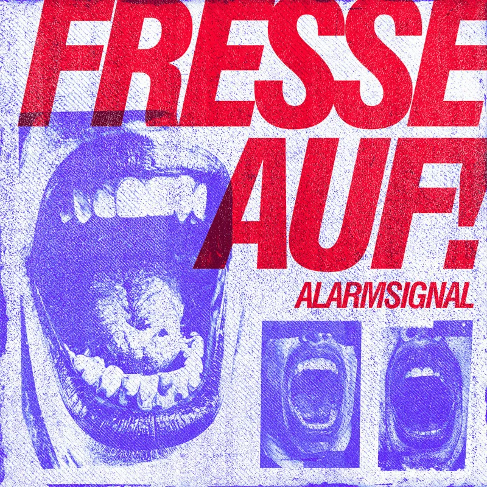

Review
ALARMSIGNAL - Fresse auf!

Mit zweifelhafter Vorfreude sitze ich vor dem Rechner.
Stereoanlage angeschlossen.
YouTube geöffnet.
Bereit.
Ich drücke auf Play.
Und bekomme direkt:
"Schnauze voll und Fresse auf!"
entgegengebrüllt.
Habe ich mir beim Zuhören auch gedacht.
Schnauze voll von diesem Alarmsignal-Geknurre.
Kann doch nicht angehen, dass die so eine große Hitdichte haben.
Zum Kotzen.
Dabei ist die Idee eigentlich simpel.
Alarmsignal machen das, was Alarmsignal seit Jahren machen:
Sie nehmen ein Thema, das vielen Leuten auf den Sack geht, packen einen Refrain drauf, den man nach einmal Hören nicht mehr loswird, und sorgen dafür, dass man spätestens beim zweiten Durchlauf mitgrölt.
Und dann kommt diese Stelle.
Der Song wird kurz ruhiger.
Nicht viel.
Gerade genug.
"Der halbe Bundestag ist blau..."
Kurzer Break.
Dann der Chor:
"...also mach die Fresse auf!"
Verdammte Gänsehaut.
Genau da hat mich die Nummer erwischt.
Nicht mit Gewalt.
Nicht mit Geschwindigkeit.
Sondern mit Timing.
Das ist die Sorte Refrain, bei der man schon beim ersten Hören weiß, dass sie live funktionieren wird.
Und zwar verdammt gut.
Besonders spannend finde ich allerdings das Ende.
Da machen Alarmsignal plötzlich etwas, das ich von ihnen so nicht unbedingt erwartet hätte.
Der letzte Teil wirkt deutlich verspielter.
Fast etwas fremd.
Mich hat das stellenweise an Madball erinnert.
An anderen Stellen eher an irgendwelche düsteren Bauhaus-Momente.
Seltsame Mischung.
Funktioniert das?
Ich glaube schon.
Es ruiniert den Song jedenfalls nicht.
Im Gegenteil.
Es macht ihn interessanter.
Trotzdem würde mich interessieren, was ihr dazu sagt.
Gelungener Abschluss?
Oder eine Ecke zu verspielt für die Nummer?
Die Presseinfo könnte man jetzt natürlich noch ausrollen, glattstreichen und mit ernster Miene danebenstellen.
Mache ich aber nicht.
Warum?
Weil "Der halbe Bundestag ist blau ... also mach die Fresse auf!" mehr über diesen Song erzählt als jeder Promo-Absatz.
Da ist die politische Ansage.
Da ist der Reflex.
Da ist der Kneipenchor.
Da ist der Moment, in dem aus Zuhören plötzlich Mitbrüllen wird.
Fazit:
Alarmsignal liefern genau das, was der Titel verspricht.
Keine Diplomatie.
Keine höfliche Anfrage.
Keine vorsichtige Diskussion.
"Schnauze voll und Fresse auf."
Mehr muss man über diesen Song eigentlich nicht wissen.
Verdammte Banausen.
Anhören könnt ihr "Fresse auf!" über den offiziellen Streaming-Link: ffm.to/fresseauf.
Mehr zur Band gibt es bei Alarmsignal, mehr zum üblichen Aggropunk-Krach bei Aggressive Punk Produktionen und auf dem Aggropunk-YouTube-Kanal.
Live
- 28.06.2026 Lärz (DE) Fusion Festival
- 03.07.2026 Leipzig (DE) Bandhaus
- 04.07.2026 Enkirch (DE) Fallig Open Air
- 17.07.2026 Selters (DE) Seepogo
- 18.07.2026 Oberhausen (DE) Druckluft
- 31.07.2026 Berlin (DE) about blank
- 01.08.2026 Hannover (DE) Fährmannsfest
- 29.08.2026 Apen (DE) Apen Air
- 06.11.2026 Erlangen (DE) E-Werk
- 07.11.2026 Freiburg (DE) Jazzhaus
- 27.11.2026 Chemnitz (DE) AJZ Talschock
- 28.11.2026 Saalfeld (DE) Klubhaus
- 03. - 05.06.2027 Merkers (DE) Rock am Berg Open Air
Tickets und Termine findet ihr bei alarmsignal-punkrock.de.